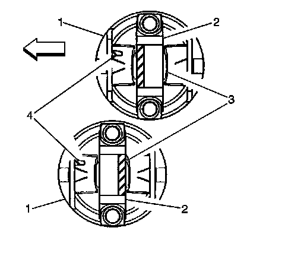
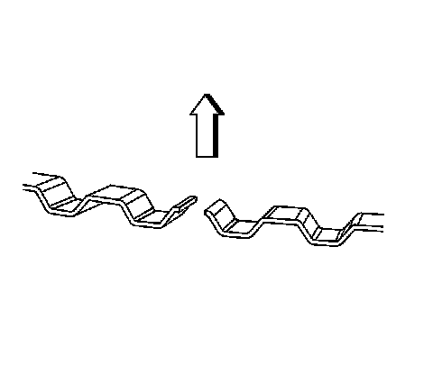
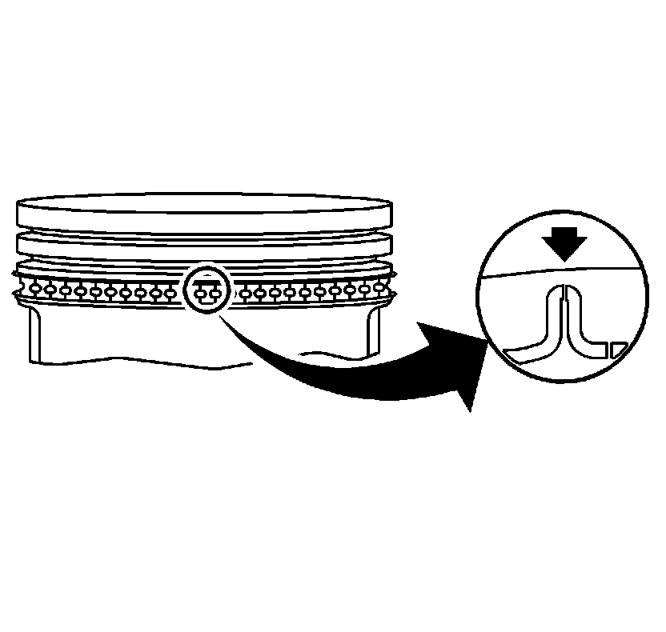
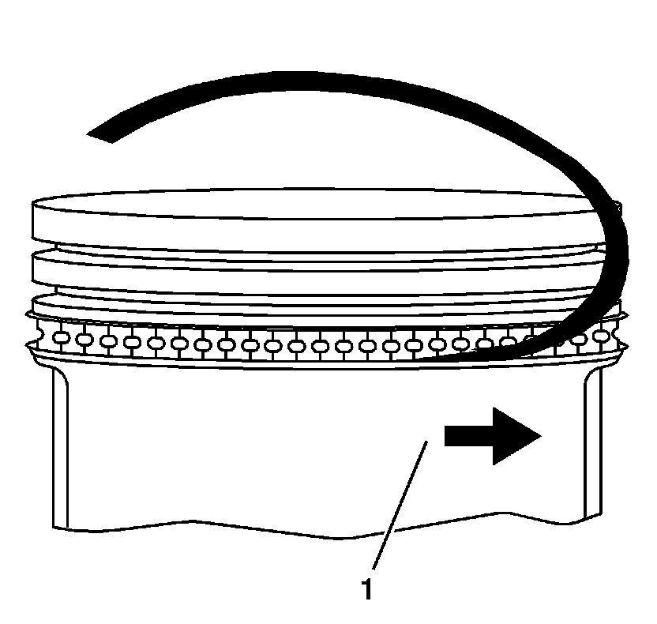
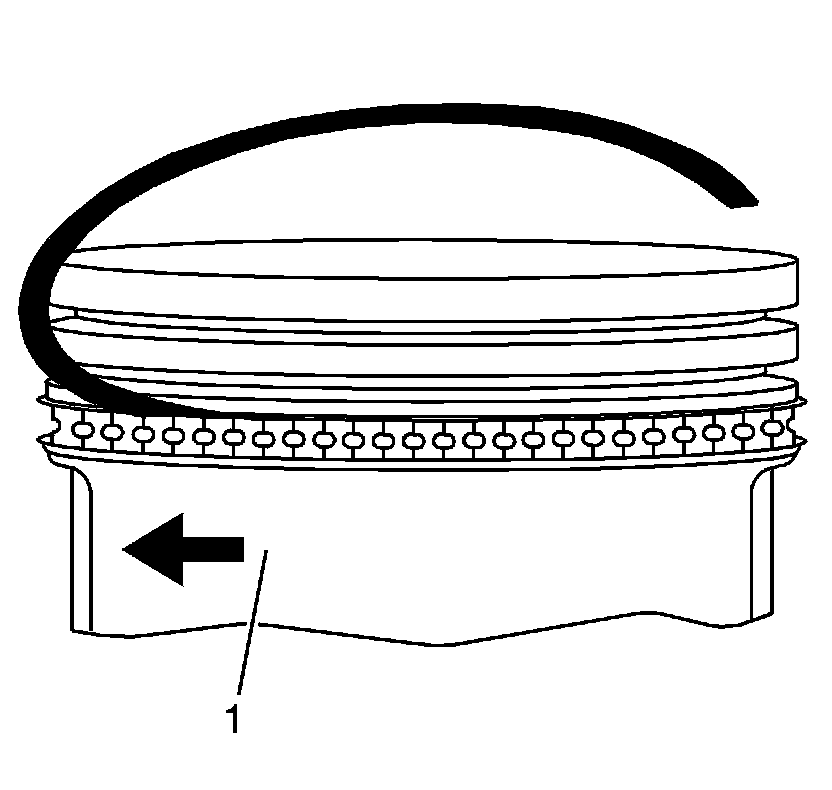
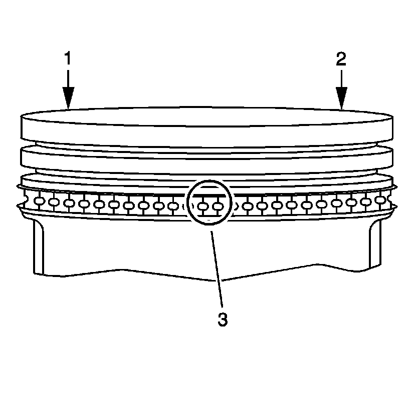
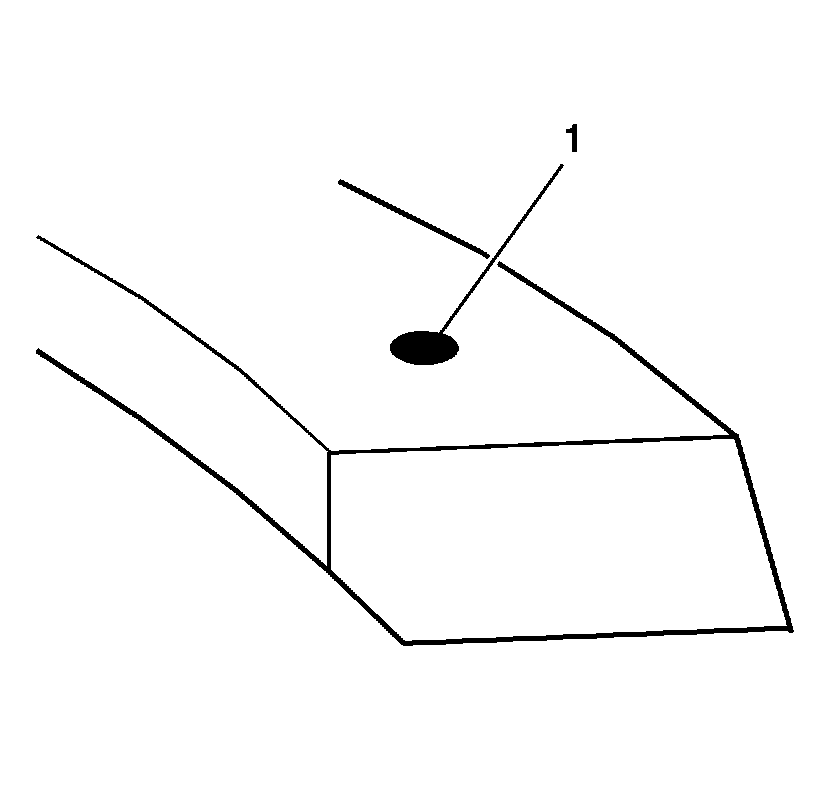
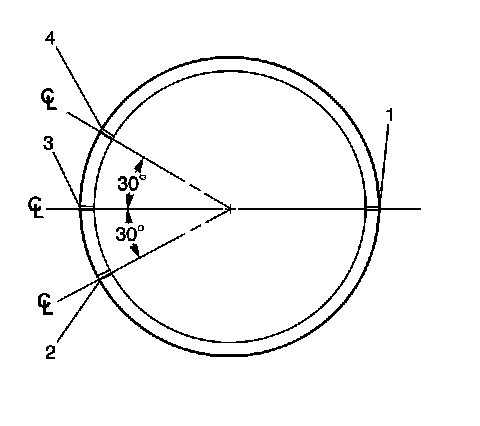
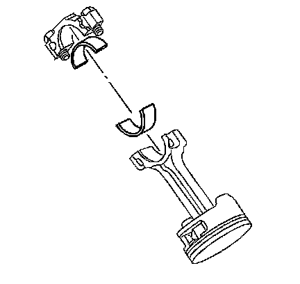

55. Piston and Connecting Rod Assemble
Piston and Connecting Rod Assemble
Tools Required
EN-46745 Piston Pin Clip Remover/Installer
Piston and Piston Pin Installation Procedure

1. Properly orient the piston (1) on the connecting rod (2) as follows:
* The locating mark (4) cast into the underside of the piston should point towards the front of the engine.
* The locating notch (3) on the connecting rod cap should be pointing towards the rear of the engine on odd-numbered cylinders and towards the front of the engine on even-numbered cylinders.
2. Lubricate the piston pin bores in the piston and connecting rod with GM prelube lubricant GM P/N 1052367 (Canadian P/N 992869) or equivalent.

3. Align the piston pin bore with the connecting rod pin bore.
4. Slide the piston pin (4) into the piston and the connecting rod (3).
Important: New piston pin retainers must be used. Never reuse the piston pin retainers.
5. Install NEW piston pin retainers (1) using the EN-46745 .
6. Ensure that the piston pin retainers are fully seated in their grooves.
7. Repeat these procedures for the remaining pistons.
Piston Ring Installation Procedure

Notice: Use a piston ring expander to install the piston rings. The rings may be damaged if expanded more than necessary.
1. Install the piston rings using a piston ring installer.

2. Properly orient the oil control ring expander as shown before installation. The ends of the expander must be facing toward the top of the piston.

3. Install the oil control piston ring spacer onto the piston.

4. Install the lower oil control piston ring onto the piston (1).

5. Install the upper oil control piston ring onto the piston (1).

6. Space the oil control piston ring end gaps (1, 2) a minimum of 90 degrees apart.

7. Install the lower compression piston ring onto the piston (1).
The mark on the side of the piston ring should face the top of the piston.
8. Install the upper compression piston ring onto the piston.
The top compression ring may be installed with either side up.

9. Once the rings are installed, set the ring gaps for the oil control, second and top rings in the positions shown:
1. Oil control ring expander and second compression ring gaps position 1.
2. Upper oil control ring gap position 2.
3. Top compression ring gap position 3.
4. Lower oil control ring gap position 4.
Connecting Rod Bearing Installation Procedure
Important: If the connecting rod bearings have been used in a running engine, you must replace them with NEW connecting rod bearings for reassembly.
1. Clean the connecting rod and the connecting rod cap bearing bore with a lint-free cloth.

2. Clean all the oil from behind the connecting rod bearing halves.
3. Install new upper connecting rod bearings into position. Roll the bearing into position so that the lock tang engages the alignment slot. The bearing must fit flush in the connecting rod.
4. Install new lower connecting rod bearings into position in the connecting rod cap. Roll the bearing into position so that the lock tang engages the alignment slot. The bearings must fit flush with the connecting rod cap.